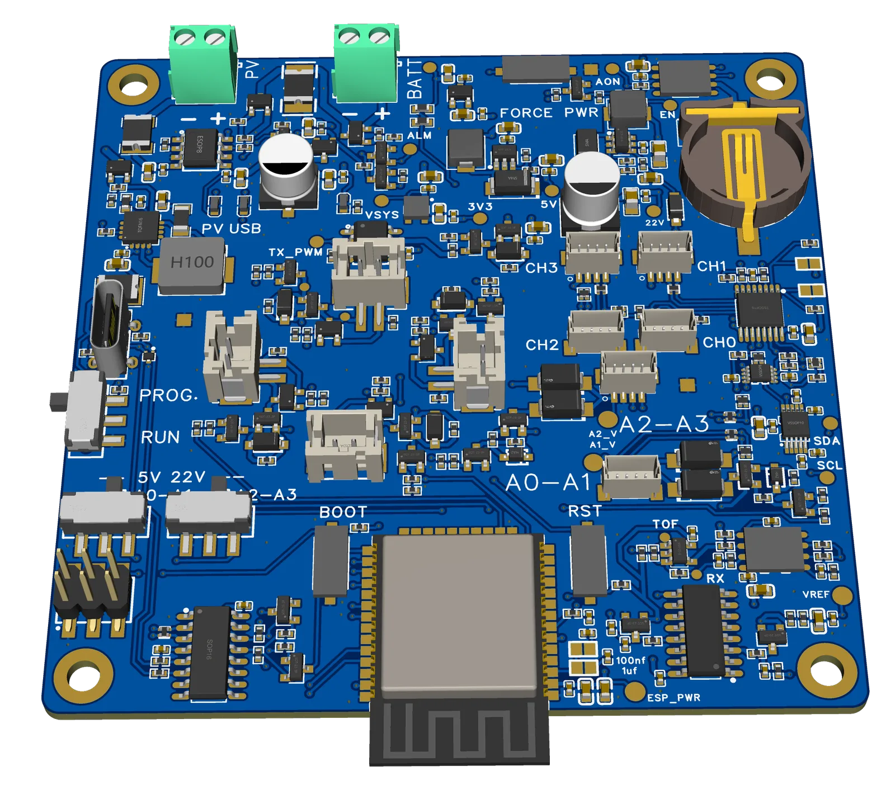
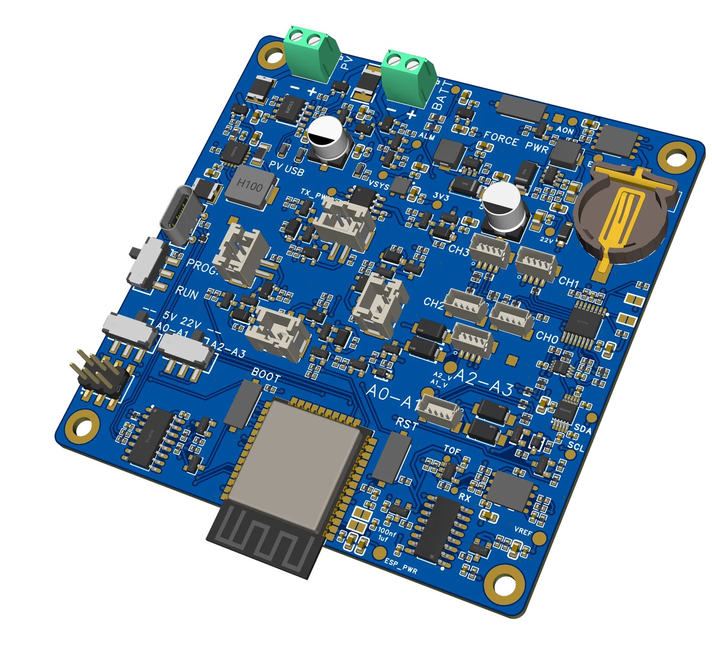

The monitoring problem
Organisms experience climate at centimetre-to-metre scales, while standard weather stations are designed for consistent regional measurements. Vegetation structure, soil moisture, topography, shade and airflow can therefore create biologically important conditions that a distant station does not represent.
This scale mismatch is especially relevant in solar photovoltaic landscapes. Under-panel zones, inter-row corridors and edges can create different radiation, wind, temperature and moisture conditions across short distances. The research need is for many distributed measurement points that can operate with limited power and connectivity.
What FieldMesh is
FieldMesh uses two hardware tiers. Sensor nodes are small battery-powered devices that wake on a real-time-clock alarm, sample attached sensors, store the reading locally and transmit queued snapshots over ESP-NOW during a scheduled sync window.
A central FieldHub coordinates the radio window, stores snapshots locally and manages periodic cloud transfer over LTE. It also provides a local Wi-Fi interface for pairing nodes, setting measurement intervals and starting or pausing deployments.
Local storage is the primary record. A node keeps a snapshot until the FieldHub confirms that it was persisted, and cloud transfer uses a retryable cursor so a temporary upload failure does not require the field network to repeat the measurement.
Custom node hardware


Measurements
The V2 snapshot format supports the following channels. Passive sensors are enabled through a deployment configuration; I²C devices such as the SHT41 and AS7341 are detected by the node.
| Channel | Sensor | Unit or output |
|---|---|---|
| Air temperature | SHT41 | °C |
| Relative humidity | SHT41 | % |
| Spectral light, 8 channels | AS7341 | Raw counts at 415–680 nm |
| Clear / NIR / gain / integration / saturation | AS7341 | Counts, multiplier, ms and status flag |
| Wind speed | Ultrasonic anemometer or reed-cup fallback | m/s |
| Wind direction | Ultrasonic anemometer, planned path | Degrees |
| Soil volumetric water content ×2 | ADS1115 + VH-5 probes | m³/m³ |
| Soil temperature ×2 | ADS1115 + thermistor | °C |
| Battery voltage | Node ADC | V |
| Auxiliary I²C ×2 | Expansion ports | Reserved |
Development note: the ultrasonic wind path is not yet producing discriminative wind-speed measurements. The reed-cup input is the current fallback for wind speed only.
How the network operates
Node lifecycle. A node moves through unpaired, paired and deployed states. A deployed node can also be placed in standby, retaining scheduled check-ins without taking new samples.
Measurement wake. The DS3231 real-time clock starts the node, sensors are read into a snapshot and the record is stored locally. The radio stays off during this wake. The next alarm is armed before slower sensor work, reducing the risk that a stalled operation leaves the node without a future wake time.
Coordinated sync. At the scheduled radio window, the FieldHub announces a session and nodes respond after a deterministic delay. Registered nodes receive bounded transfer grants rather than transmitting at once. Each queued snapshot remains on the node until a durable acknowledgement confirms that the FieldHub stored it.
Field configuration. Operators use a captive Wi-Fi interface to discover, pair and deploy nodes, configure sensors and update the schedule. Configuration updates are versioned and repeatable. A rapid-boot rescue sequence can clear a node’s pairing state if field recovery is required.
Cloud and dashboard
The cloud layer separates telemetry storage from the interface used to explore the measurements. The original Google Apps Script / Google Sheets backend and a newer Supabase backend currently sit behind the same frontend data-provider boundary, allowing the migration to be staged and reversed if needed.
The Supabase implementation uses PostgreSQL, Auth, Row Level Security, Edge Functions and Realtime. Device credentials are handled separately from browser access, and ingestion is designed to be authenticated and idempotent.
The React and Vite dashboard presents readings, charts, a deployment map, node and FieldHub status, battery voltage, schedules, local storage, upload queues and diagnostics. It also handles loading, empty, stale, error, offline and permission states explicitly.
Power and recovery design
Both hardware tiers use a switched-power architecture. A PWR_HOLD signal latches the active rail when the device wakes; releasing it powers the board off completely. The DS3231 real-time clock retains time and controls future measurement and sync alarms.
The design does not depend on ESP32 deep sleep. Full power-off is the normal state, with active time limited to sampling, synchronisation or upload work. Schedule changes include grace cycles so nodes on the previous timing are not stranded during a transition.
- Local-first data: persist measurements before attempting cloud transfer.
- Power-off by default: remove the switched rail between scheduled wakes.
- Durable acknowledgement: delete a node record only after confirmed FieldHub storage.
- Bounded recovery: give critical operations explicit retry limits and fallbacks.
- Coordinated radio access: grant transfer windows rather than relying on contention.
- Version-aware updates: keep configuration changes repeatable and migration tolerant.
Current status
Firmware: FieldHub V2 and Node V2 flows have been exercised at bring-up level on custom PCBs. RTC wake, ESP-NOW sync, sensor detection, local queueing, flash logging and modem communication have been tested. Live end-to-end LTE upload and the ultrasonic wind-measurement path remain in progress.
Cloud: the Supabase migration is underway alongside the original Apps Script backend. Both are supported during the staged cutover.
Dashboard: the React application includes charts, mapping, node management, FieldHub device pages and system-state handling.
Hardware: custom node PCB Gerbers are prepared for the next order while reverse-polarity protection, leakage and indicator strategy remain under review. Node housings have been modelled for FDM printing; the FieldHub uses an off-the-shelf industrial enclosure format.

.webp){kind=link}
.webp){kind=link}